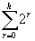

Trees
Inserting in a linked list is fast but searching is slow.
Searching a sorted array is fast but inserting is slow.
Can we combine these ideas so as to get the advantages of both? The answer is to use a tree.
Consider the following words:
Jean, Richard, Kay, Dennis, Fred, Edward, Xenia, Steve, Joyce, …..
We can store them in a data structure like this:
This is a tree.
The circles on the tree are called nodes.
The nodes immediately below (to the left and right of) a given node are called its children. The node immediately above a given node is called its parent.
The (unique) node without a parent is called the root. A node with no children is called a leaf.
Two children of the same parent are said to be siblings. Ancestor and descendant have the obvious meanings.
The tree we have drawn is a binary search tree:- binary because no node can have more than two children and search because the nodes are ordered for convenience in searching.
Notice that a node and its descendants themselves constitute a binary search tree, a sub-tree of the original tree.
A binary tree is either empty or it consists of a node called the root together with two binary trees called the left sub-tree and the right sub-tree of the root.
A binary search tree is a binary tree that is either empty or one in which each node contains a key that satisfies the following conditions:
We represent a binary search tree in Java as follows:
public class BinaryTree
{
private Sortable data; // Object stored in tree must be Sortable
private BinaryTree left; // Points to left sub tree
private BinaryTree right; // Points to right sub tree
An empty tree has the value of data set to null. In my implementation left and right are also null until they are required. This complicates the code slightly but is more efficient on space.
The operations we need on a tree are the usual ones for a list: locate, insert, delete and exist but we will also look at providing an enumeration interface to parse over the tree.
On average, the first four can all be accomplished in O (log 2 n) operations, where n is the number of items. The iterate operation of course requires O(n) operations.
import java.io.*; // required for Serializable
import aber.util.Sortable;
/**
* A class that provides a simple representation of a binary tree.
* @author Mark Ratcliffe
* @version Last revision date: 08/11/98
*/
public class BinaryTree implements Serializable
{
private Sortable data; // Object stored in tree must be Sortable
private BinaryTree left; // Points to left sub tree
private BinaryTree right; // Points to right sub tree
/**
* Default Constructor creates an empty tree with no data
*/
public BinaryTree ()
{
data = null;
left = null;
right = null;
}
/**
* Constructor sets data, left & right are set to null
* @param theData the Sortable object to be inserted in node
*/
public BinaryTree (Sortable theData)
{
data = theData;
left = null;
right = null;
}
/**
* Recursive method to insert theObject into tree.
* If tree is non-null then insert left, if less, right if greater.
* @param TheObject - Sortable object to be inserted into tree
* @exception TreeDuplicateKeyException thrown if key is not unique
*/
public void insert(Sortable theObject) throws TreeDuplicateKeyException
{
if (data == null)
{
data = theObject;
}
else
{
// No duplicates keys are allowed in the tree
if (theObject.isEqual(data))
{
throw new TreeDuplicateKeyException();
}
// Do we insert to the left or the right?
if (theObject.lessThan(data))
{
if (left == null)
{
// left subtree is null so create a new subtree
left = new BinaryTree(theObject);
}
else
{
// left subtree is not null so let's insert into it
left.insert(theObject);
}
}
else
{
if (right == null)
{
right = new BinaryTree(theObject);
}
else
{
right.insert(theObject);
}
}
}
}
/**
* locate finds and returns the location of an object in the tree
* @param theObject Sortable object to be located
* @return Sortable the object found in the tree
* @exception TreeKeyNotFoundException thrown if key is not unique
*/
public Sortable locate(Sortable theObject) throws TreeKeyNotFoundException
{
Sortable temp; // we'll set this to the object when we find it
if (data == null)
{
throw new TreeKeyNotFoundException("Coundn't find " + theObject);
}
if (theObject.isEqual(data))
{
temp = data; // we've found what we were looking for
}
else
{
// Do we insert to the left or the right?
if (theObject.lessThan(data))
{
if (left == null)
{
throw new TreeKeyNotFoundException("Couldn't find " + theObject);
}
else
{
temp = left.locate(theObject);
}
}
else // we must go right
{
if (right == null)
{
throw new TreeKeyNotFoundException("Couldn't find " + theObject);
}
else
{
temp = right.locate(theObject);
}
}
}
return temp;
}
/* * this one does work but it looks a mess with all the nulls */
public String toString()
{
//return ("\t " + left + "\t" + data + "\t" + right);
}
*/
/**
* toString generates a formatted string representing the tree.
* @return String formatted string representing tree
*/
public String toString()
{
String tempString = "";
// first we deal with the left subtree
if (left != null)
{
tempString += left;
}
// now add the data at this level
tempString += " " + data + " ";
// now we deal with the right subtree
if (right != null)
{
tempString += right;
}
return tempString;
}
}
Traversing a Tree
Suppose that we want to visit every node in a binary tree (not necessarily a search tree) in order to do something to each node, such as print it. This is called traversing the tree.
There are many possible orders in which we can do this - most of them are not useful.
For a search tree, the most natural order is by order of increasing key:
This is called in order traversal.
This is pre-order traversal.
This is post order traversal.
All that changes in the code is the order of the three statements within iteration method
In-Order Pre-order: Post-Order:
left.inOrder() visit() left.postOrder();
visit() left.preOrder(); right.postOrder();
right.inOrder(); right.preOrder(); visit();
Create a tree which models arithmetic expressions and then think about pre and post order traversal.
Consider storing the data from a tree for later retrieval. Which traversal might you use?
Deleting from a binary search tree (nasty!)
There are three cases to consider:
1. the node to be deleted is a leaf - trivial
2. node to be deleted has only one sub-tree - again easy; make the parent of the node to be deleted into the parent of the non-empty sub-tree itemize
3. both left and right sub-trees of the node to be deleted are non-empty – harder: call the right hand child of the node to be deleted R, its left hand child L and its parent P.
Make R the child of P replacing node to be deleted and make L the leftmost descendant of R.
Complexity questions in dealing with binary search tree - O(?)
the level of a node is the number of branches traversed in reaching it from the root; the root has level 0.
the height of a tree is the maximum level number that occurs.
The number of nodes in a complete binary tree of height h:

Number of nodes = 1 + 2 + 4 + . . . . + 2h
Which is the Geometric Progression, so applying the general formula
(ie our progression is 20 21 ……… 2h
Hence a tree of height h with n nodes is balanced if:
A binary tree is balanced if there is no binary tree of lesser height that can have the same number of nodes.
If you have trouble with this (I did)– try some actual examples. Try trees with 7, 15 and 31 elements!
Another way of looking at this equation is that in a balanced binary tree of n elements, the number of levels is about equal to log2 n.
Balanced trees give the best search/insert times for a given number of nodes.
The maximum number of nodes in a tree of height 1 is 3, so this tree is balanced.
But real life is not this tidy.
To create a tree we normally create an empty tree, get the items one by one and insert them as they come using out insert method.
initialise theTree
while (still more data to come)
{
insert object into tree
get next object
}
However this may build a badly shaped tree:
It has about n levels – not log n
For trees like this, the operation times are more like n than log 2 n because the trees are almost linear lists.
There are algorithms for balancing binary search trees. They tend not to be very useful because we usually need to keep the tree balanced when we do insertions and deletions, rather than balance it once and for all.